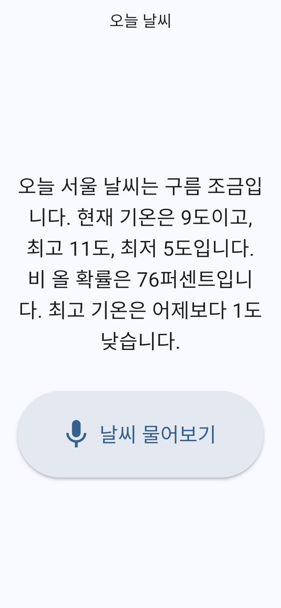
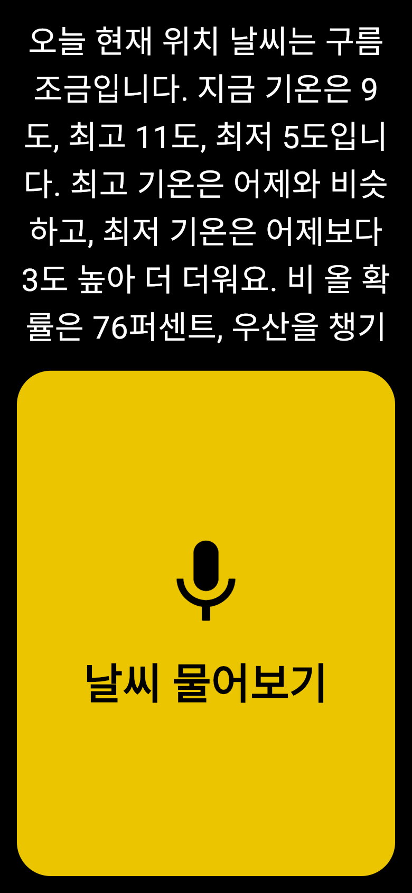
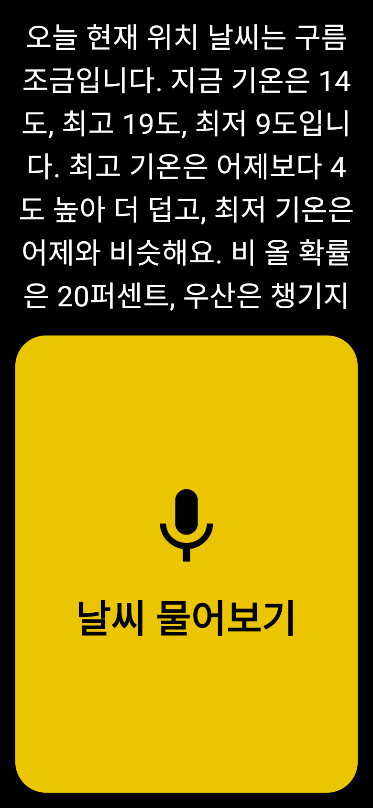
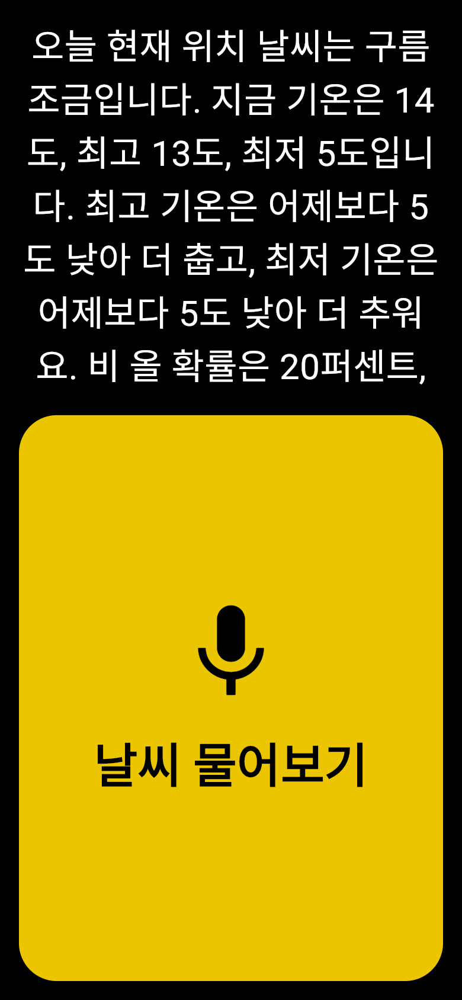
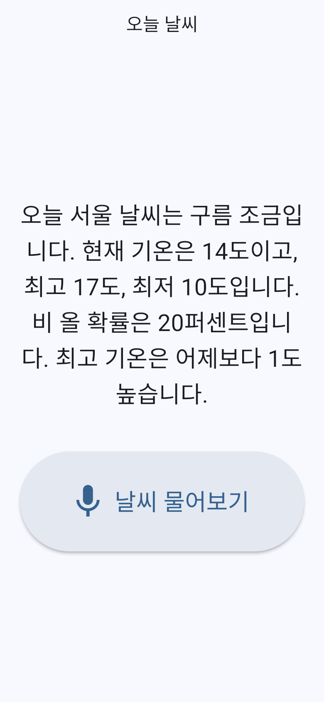
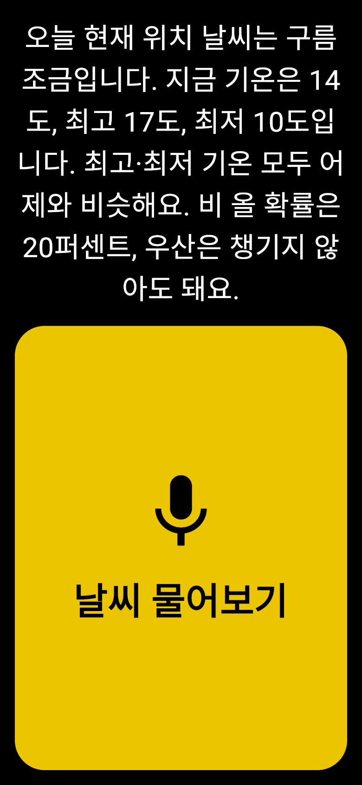
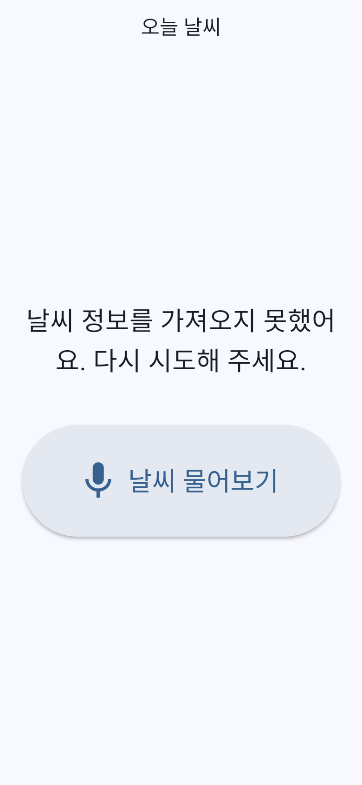
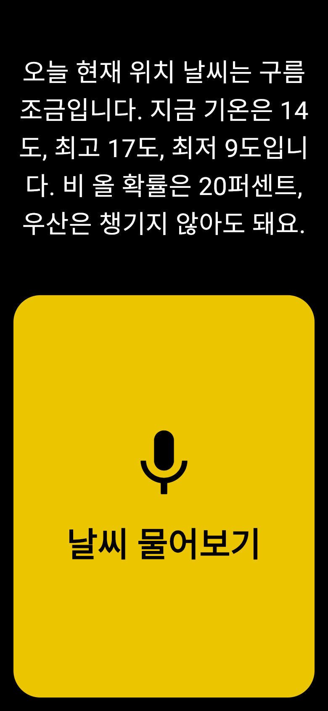

🌡️ 어제와 비교해서 알려주기
2026년 10월 29일 업그레이드 · 같은 기능을 한 문장(sentence) 방식과 PRD + Todolist 방식으로 더했어요.
1. 한눈에 보기
10월 29일 실제 날씨로 버튼을 누른 화면이에요. 어제 최고 12도·최저 2도 → 오늘 최고 11도·최저 5도.
한 문장

…비 올 확률은 76퍼센트입니다. 최고 기온은 어제보다 1도 낮습니다.
최고 기온만맨 끝에 붙음숫자만
VS
PRD

…최고 11도, 최저 5도입니다. 최고 기온은 어제와 비슷하고, 최저 기온은 어제보다 3도 높아 더 더워요. 비 올 확률은…
최고 + 최저기온 바로 뒤숫자 + 느낌
2. 업그레이드 전 → 후
원래 답 화면과 오늘 바뀐 답 화면이에요.
한 문장

전
→
후
➕ 답 맨 끝에 한 문장
PRD

전
→
후
➕ 최고·최저 기온 바로 뒤에 한 문장
3. 날씨가 이럴 땐?
시험용 기온 값을 넣어 같은 상황을 두 앱에 똑같이 보여 줬어요.
한 문장PRD
🥵더울 때
어제 15° / 8°
오늘 19° / 9°
오늘 19° / 9°
△ 숫자만"어제보다 4도 높습니다."

✓ 숫자 + 느낌"4도 높아 더 덥고, 최저 기온은 비슷해요."
🥶추울 때
어제 18° / 10°
오늘 13° / 5°
오늘 13° / 5°
△ 최고 기온만"어제보다 5도 낮습니다."

✓ 최고 + 최저"5도 낮아 더 춥고, 최저도 5도 낮아 더 추워요."
😐1도 차이
어제 16° / 9°
오늘 17° / 10°
오늘 17° / 10°

△ 1도도 그대로"어제보다 1도 높습니다."

✓ 짧게 정리"최고·최저 기온 모두 어제와 비슷해요."
❓어제 정보가 없을 때
어제 기온을 못 받음

✗ 오늘 날씨도 못 들음"날씨 정보를 가져오지 못했어요."

✓ 비교만 빼고 알려 줌오늘 날씨는 평소처럼 나와요.
4. 만드는 과정
같은 기능이어도 일하는 순서가 달랐어요.
한 문장
💬 요청 한 문장
→
💻 코드 수정커밋 1개
PRD
📄 PRD에 기능 추가4-6
→
🤔 미리 정하기9-5 비교 방식 · 9-6 정보 없을 때
→
🎯 완성 기준10-9
→
✅ 할 일 6개Todolist 7단계
→
💻 하나씩 구현커밋 5개
→
🔍 점검
■ 파랑 = 한 문장 · ■ 노랑 = PRD (테스트 수는 앱 전체 기준)
⚠️ 함께 발견한 점
PRD 답이 길어져서 작은 화면에서는 글자 끝(“우산을 챙기…”)이 잘려 보여요. 소리로는 끝까지 읽어 줘요.
PRD 답이 길어져서 작은 화면에서는 글자 끝(“우산을 챙기…”)이 잘려 보여요. 소리로는 끝까지 읽어 줘요.
한 문장 → 빨리 붙인 "숫자 한 줄"
PRD → 듣는 사람을 생각한 "느낌까지 담은 말"
화면: Chrome · 아이폰 크기(390×844) · 말하기·듣기만 가짜 입력으로 대신